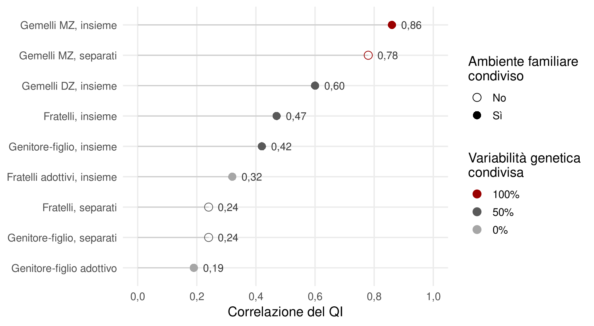

10 Geni, ambiente ed ereditabilità
«Intelligenti si nasce o si diventa?» La domanda sembra legittima. In realtà è mal posta, e capire perché è il primo passo per orientarsi in uno dei temi più fraintesi della psicologia.
Abbiamo un’intelligenza umana perché abbiamo un genoma umano. Con il genoma di uno scimpanzé, di un’ape o di un delfino avremmo un’intelligenza completamente diversa. In questo senso l’intelligenza ha ovviamente basi genetiche. Ma di solito la domanda è un’altra: quanta parte delle differenze di QI fra le persone che ci circondano riflette differenze genetiche fra loro? Questa è una domanda sull’ereditabilità. Riguarda la piccola frazione del genoma che varia da persona a persona, e ha una risposta precisa solo se si precisa anche la popolazione a cui si riferisce.
10.1 Basi genetiche ed ereditabilità
Una caratteristica ha basi genetiche quando dipende da meccanismi biologici codificati nel genoma. Può essere identica in tutti gli individui di una specie: abbiamo cinque dita per mano, i cani scodinzolano. L’ereditabilità, invece, riguarda le differenze: indica quanto la variazione di una caratteristica fra gli individui di una popolazione riflette variazioni genetiche fra loro. I figli di persone alte tendono a essere più alti della media; i pulcini di galline che crescono in fretta tendono a crescere in fretta.
Una caratteristica con basi genetiche chiarissime può avere ereditabilità quasi nulla, se tutti condividono le stesse varianti. E una caratteristica fortemente ereditabile può essere molto influenzata dall’ambiente. Un esempio efficace è quello dei fenicotteri (Serpico, 2022). Il loro colore rosa ha una base genetica? Sì, ma si manifesta solo se si nutrono di crostacei ricchi di carotenoidi. Sono rosa per effetto dell’alimentazione, allora? Sì, ma solo perché la loro genetica organizza il metabolismo e il deposito di quei pigmenti nelle piume. Un gabbiano può mangiare gli stessi crostacei e non diventerà mai rosa. Geni e ambiente non si sommano come ingredienti separati: agiscono insieme.
L’ereditabilità, indicata con h², è una proporzione di varianza:
\[ h^2 = \frac{\text{varianza dovuta a differenze genetiche}}{\text{varianza totale del tratto}} \]
L’ambiente compare nella formula, al denominatore. Se in una popolazione le condizioni ambientali sono molto diverse da persona a persona, la varianza totale cresce e l’ereditabilità scende. Se sono simili, l’ereditabilità sale. L’ereditabilità non è una proprietà del tratto in assoluto, ma del tratto in una popolazione con una certa distribuzione di geni e di ambienti.
10.2 Come si stima: famiglie, adozioni, gemelli
Il fatto che figli di genitori intelligenti tendano a essere intelligenti non basta a stimare l’ereditabilità. Genitori e figli condividono metà della variabilità genetica, ma anche la casa, il reddito, i libri, la lingua, la scuola. La somiglianza potrebbe dipendere da entrambi.
Per separare le due fonti bisogna confrontare coppie di persone che condividono l’ambiente in misura simile ma la genetica in misura diversa, o viceversa. È la logica degli studi su famiglie, adozioni e soprattutto gemelli (Figura 10.1). Le correlazioni fra i QI seguono con regolarità il grado di somiglianza genetica. I gemelli monozigoti cresciuti insieme correlano attorno a 0,86, i dizigoti attorno a 0,60, i fratelli non gemelli attorno a 0,47. I gemelli monozigoti cresciuti separati restano molto simili, mentre i figli adottivi somigliano poco ai genitori adottivi (Plomin et al., 2001).
Una precisazione sulle percentuali. Dire che i gemelli dizigoti condividono il 50% non significa che condividano metà del genoma: tutti gli esseri umani ne condividono quasi la totalità. Significa che condividono, in media, metà delle varianti che differiscono nella popolazione.
Il confronto più informativo è quello fra gemelli monozigoti e dizigoti cresciuti insieme. Hanno la stessa età, crescono nella stessa famiglia, ma condividono rispettivamente tutta e metà della variabilità genetica. Se i monozigoti si somigliano più dei dizigoti, la differenza va attribuita ai geni. Oggi si usano modelli di equazioni strutturali, ma la logica è riassunta dalle formule di Falconer:
- ereditabilità: h² = 2 × (rMZ − rDZ) = 2 × (0,86 − 0,60) ≈ 0,52;
- ambiente condiviso: c² = 2 × rDZ − rMZ = 1,20 − 0,86 ≈ 0,34;
- ambiente non condiviso ed errore di misura: e² = 1 − rMZ ≈ 0,14.
L’ambiente condiviso comprende tutto ciò che rende simili i membri di una famiglia: reddito, quartiere, stile educativo, libri in casa. L’ambiente non condiviso comprende ciò che li rende diversi: amicizie, insegnanti, malattie, eventi casuali. Con questi dati, che mescolano età diverse, circa metà delle differenze di QI è attribuibile a differenze genetiche.
10.3 L’ereditabilità cresce con l’età
Il dato più sorprendente è che l’ereditabilità del QI non è fissa. In un grande studio su gemelli di diversi paesi è risultata circa 0,41 nell’infanzia, 0,55 nella prima adolescenza e 0,66 nella tarda adolescenza (Haworth et al., 2010). Nell’età adulta le stime arrivano spesso a 0,7–0,8, mentre l’effetto dell’ambiente condiviso si riduce fin quasi a scomparire (Plomin & Deary, 2015).
Ci si aspetterebbe il contrario: con gli anni si accumulano esperienze, e l’ambiente dovrebbe pesare di più. Perché accade? Sono state proposte diverse spiegazioni.
- Nuovi geni che entrano in gioco? Sembra di no. Le influenze genetiche sul QI sono in larga parte le stesse alle diverse età; ciò che cambia è il loro peso (Briley & Tucker-Drob, 2013; Plomin & Deary, 2015).
- Correlazione gene-ambiente. È l’ipotesi più accreditata. Piccole differenze iniziali vengono amplificate perché bambini diversi suscitano risposte diverse da genitori e insegnanti e, crescendo, scelgono attivamente ambienti in linea con le proprie inclinazioni.
- Riduzione dell’ambiente condiviso. Crescendo si condivide sempre meno con la famiglia d’origine.
- Stabilizzazione del QI. Nell’infanzia i punteggi oscillano di più, per i diversi ritmi di maturazione cerebrale; poi si stabilizzano.
Un esempio chiarisce il meccanismo della correlazione gene-ambiente. Due bambini partono quasi uguali: uno esattamente nella media, l’altro un po’ sopra. Il secondo ottiene voti leggermente migliori e preferisce attività un po’ più impegnative. Nell’adolescenza sceglie una scuola più esigente, riceve più attenzione da qualche insegnante, frequenta amici con interessi simili. Da adulto sceglie un’università selettiva e un lavoro intellettualmente stimolante. Il primo fa scelte tipiche e arriva dove era partito. Il secondo, partito un po’ sopra la media, arriva molto sopra. L’effetto genetico iniziale è stato amplificato dall’ambiente, e l’analisi lo attribuirà ai geni.
10.4 Che cosa l’ereditabilità non dice
Un’ereditabilità di 0,6–0,8 negli adulti suscita tre domande ricorrenti.
Significa che l’intelligenza è decisa dai geni e che impegno, istruzione e cambiamenti sociali sono inutili? No. L’ereditabilità descrive l’origine delle differenze fra individui in una popolazione, in un certo momento storico. Non dice nulla sul livello medio, né su che cosa accadrebbe cambiando l’ambiente di tutti. L’ambiente può avere effetti enormi sull’intelligenza dell’intera società, come mostra il capitolo sull’effetto Flynn, senza che l’ereditabilità cambi. E il restante 20–40% della varianza non è poco.
Il dato è definitivo? Non può esserlo per principio. L’ereditabilità esprime il peso dei geni in rapporto all’ambiente. Se le condizioni di vita diventassero più diverse da persona a persona, l’ereditabilità diminuirebbe; se diventassero più uniformi, aumenterebbe.
È meglio vivere in un mondo in cui l’ereditabilità dell’intelligenza è alta o bassa? Istintivamente si preferisce la seconda. Ma conviene pensarci. Un mondo con bassa ereditabilità è probabilmente un mondo di estremi, in cui alcuni crescono in condizioni molto avvantaggiate e altri in condizioni molto svantaggiate, e le differenze ambientali sono così grandi da schiacciare quelle genetiche. Un’ereditabilità alta è, almeno in parte, il segno che le opportunità di base sono distribuite in modo relativamente uniforme.
10.5 Quando l’ambiente è povero
Non solo un ambiente disuguale abbassa l’ereditabilità. Anche un ambiente mediamente povero sembra farlo. In uno studio su gemelli statunitensi valutati a 7 anni, l’ereditabilità del QI era attorno al 10% nelle famiglie con lo status socioeconomico più basso e molto alta in quelle con lo status più alto (Turkheimer et al., 2003). In un ambiente svantaggiato il potenziale genetico ha poco margine per esprimersi, e piccole differenze di opportunità, come una famiglia stimolante o trascurante, fanno una grande differenza. In un ambiente benestante le opportunità di base sono comunque sufficienti e le differenze genetiche emergono.
Il risultato, però, non è universale. Una meta-analisi ha trovato questa moderazione negli Stati Uniti ma non in Europa occidentale e in Australia, dove l’ereditabilità non varia in modo apprezzabile con lo status socioeconomico (Tucker-Drob & Bates, 2016). Una spiegazione plausibile è che un accesso più universale a cure mediche, istruzione di qualità e sostegno al reddito renda anche le condizioni più povere non così povere, almeno per lo sviluppo cognitivo. È un’ipotesi, non un risultato dimostrato; ma è un’ipotesi con implicazioni politiche evidenti.
10.6 I limiti degli studi sui gemelli
Gli studi sui gemelli stimano quanta variabilità di un tratto riflette variabilità genetica, non quali geni siano coinvolti. E poggiano su alcune assunzioni discutibili.
La prima è che gemelli monozigoti e dizigoti condividano l’ambiente nella stessa misura. Forse i monozigoti vengono trattati in modo più simile, perché si somigliano di più. In tal caso una parte della loro somiglianza maggiore sarebbe ambientale e l’ereditabilità risulterebbe sovrastimata.
La seconda è che i dizigoti condividano esattamente metà della variabilità genetica. Questo è vero se gli individui si accoppiano a caso. Ma le persone tendono a scegliere partner simili, e l’intelligenza è uno dei tratti per cui questo accade di più: la correlazione fra i QI dei coniugi è attorno a 0,4 (Plomin & Deary, 2015). Se i dizigoti condividono più del 50%, l’ereditabilità risulta sottostimata. Viceversa, se contano interazioni fra geni o effetti di dominanza, i dizigoti condividono meno del 50% delle combinazioni rilevanti, e l’ereditabilità risulta sovrastimata.
Questi errori vanno in direzioni opposte e la loro entità è discussa. Il quadro generale, però, è sostenuto anche da disegni diversi, come gli studi sulle adozioni e sui gemelli cresciuti separati. Il prossimo capitolo mostra che cosa aggiungono i metodi della genetica molecolare, e perché le loro stime non coincidono con quelle dei gemelli.